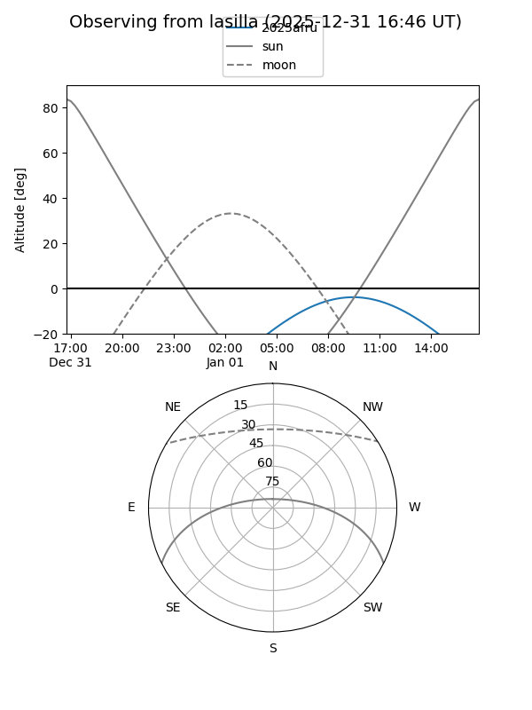
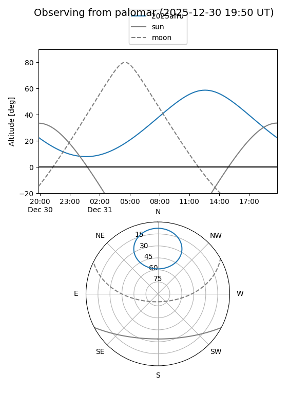
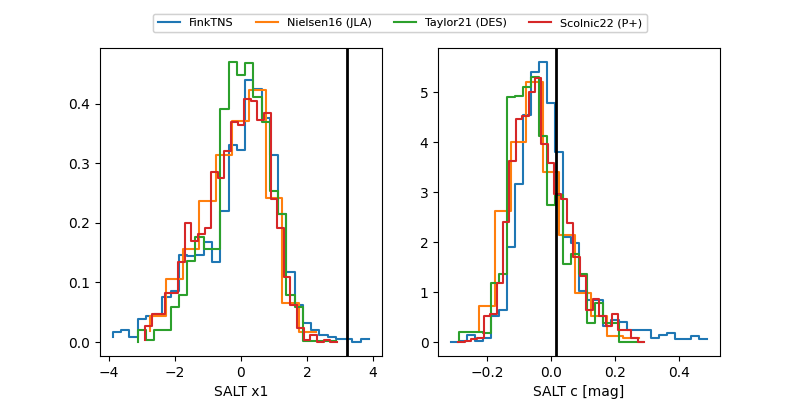

2025afru
Target 2025afru at 2025-12-31 16:59
Aliases and brokers:
FINK:
Lasair:
ALeRCE:
TNS:
YSE:
alt names
ZTF25aceglwr (ztf,fink_ztf)
2025afru (tns,yse)
Coordinates:
equatorial (ra, dec) = 171.6827,+64.73457
equatorial (HMS+DMS) = 11:26:43.84,+64:44:04.44
galactic (l, b) = (136.8246,+50.04693)
Flags:
Photometry:
last ztfg=20.04, ztfr=19.85
2 ztfg, 1 ztfr detections
Lightcurve

Visibility


Additional plots
